GIS Coursework / Week 06
Utah Earthquake Faults

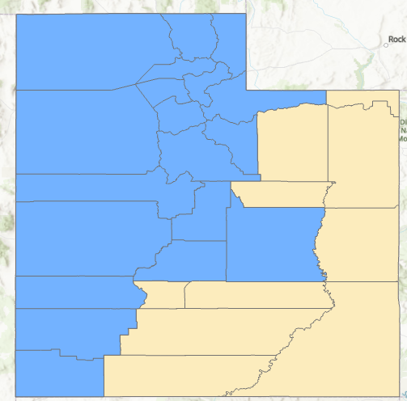
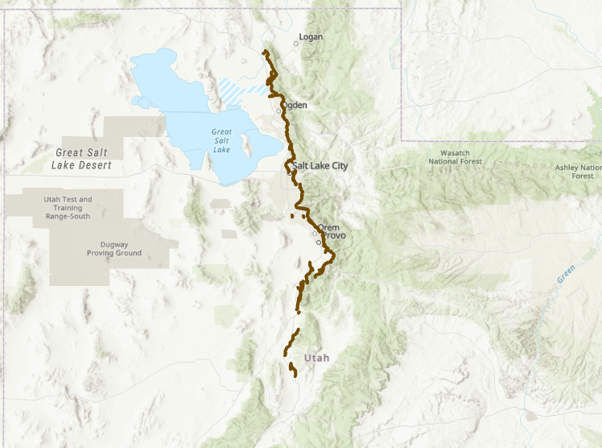
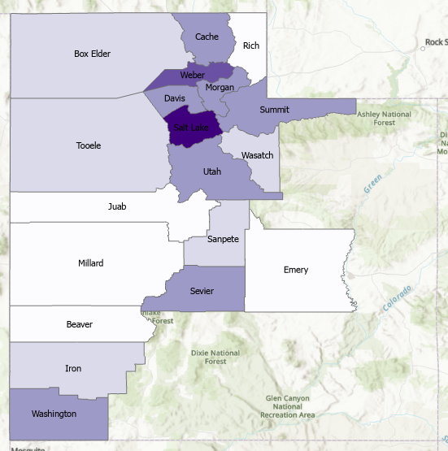
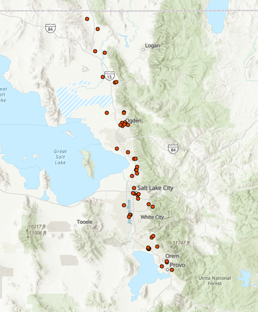
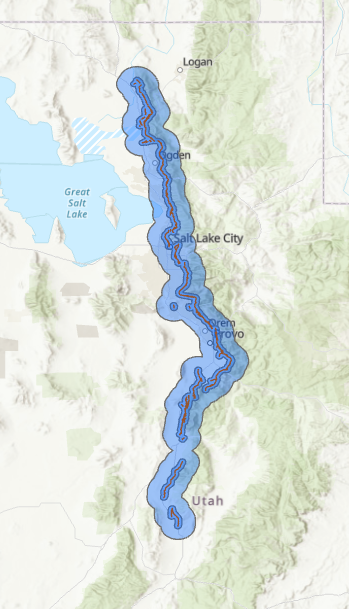
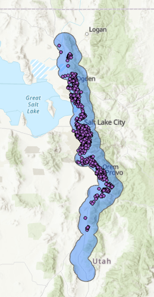
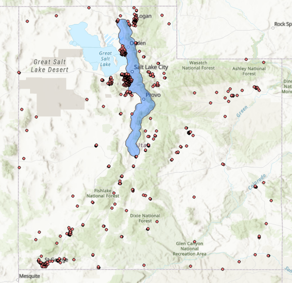

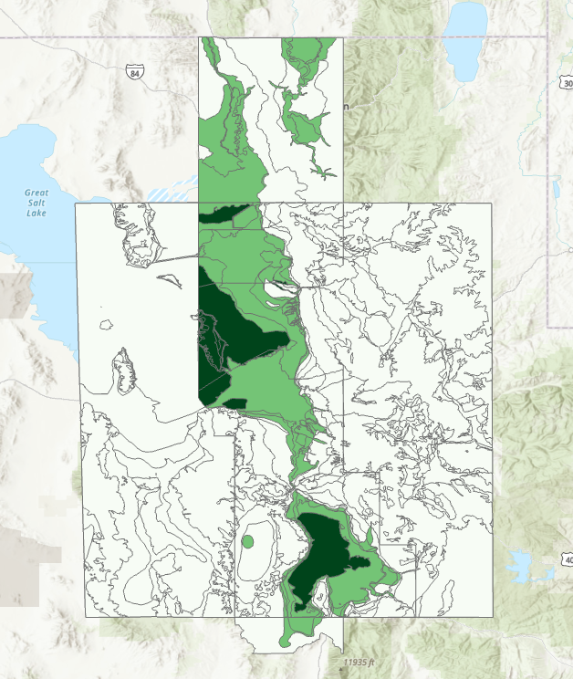
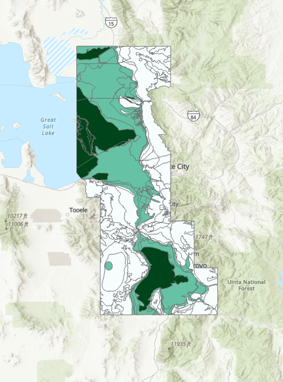
Overview
A thirteen-part spatial analysis of earthquake fault risk across Utah, working from identifying which counties contain faults up to building a seismic risk index and assessing which schools sit closest to the Wasatch Fault.
Process
Combined Select by Location/Attributes, Dissolve, Buffer, Clip, Erase, Intersect, Union, and Summarize Within across the mini-challenges, comparing outputs like union vs. intersect along the way.
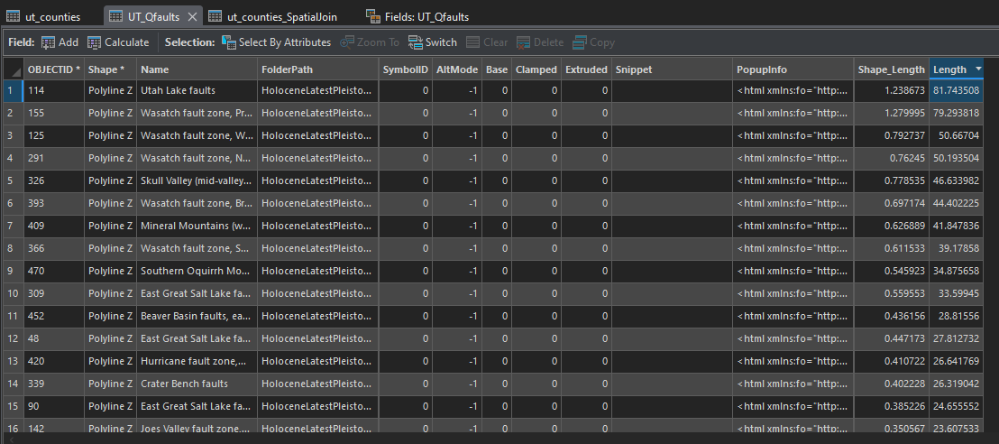
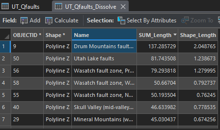
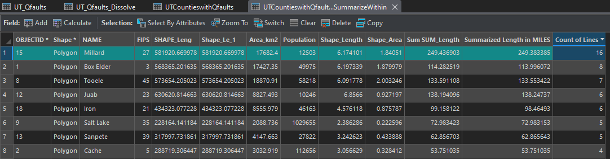
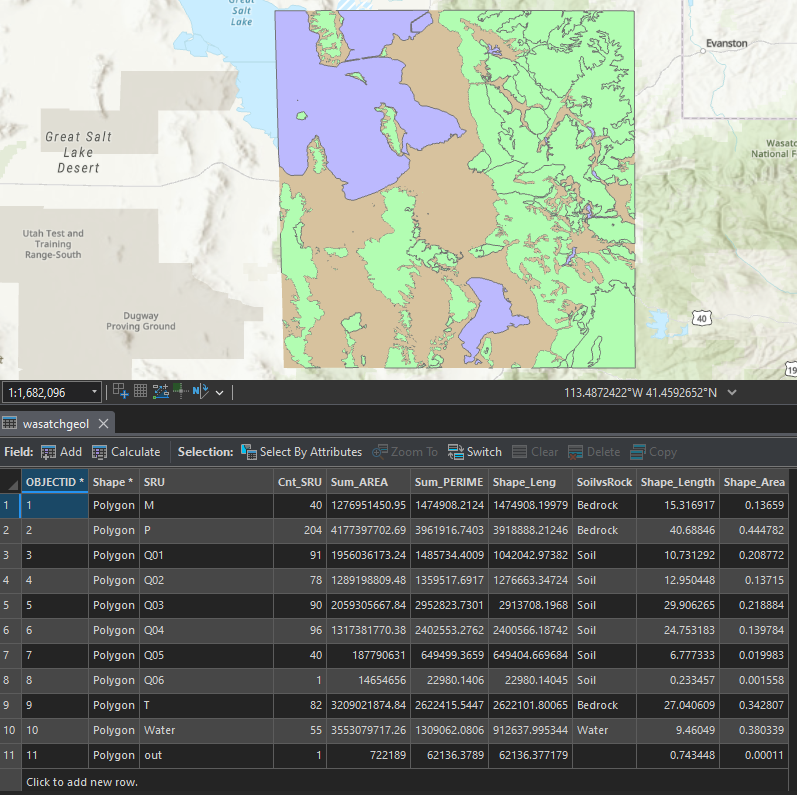
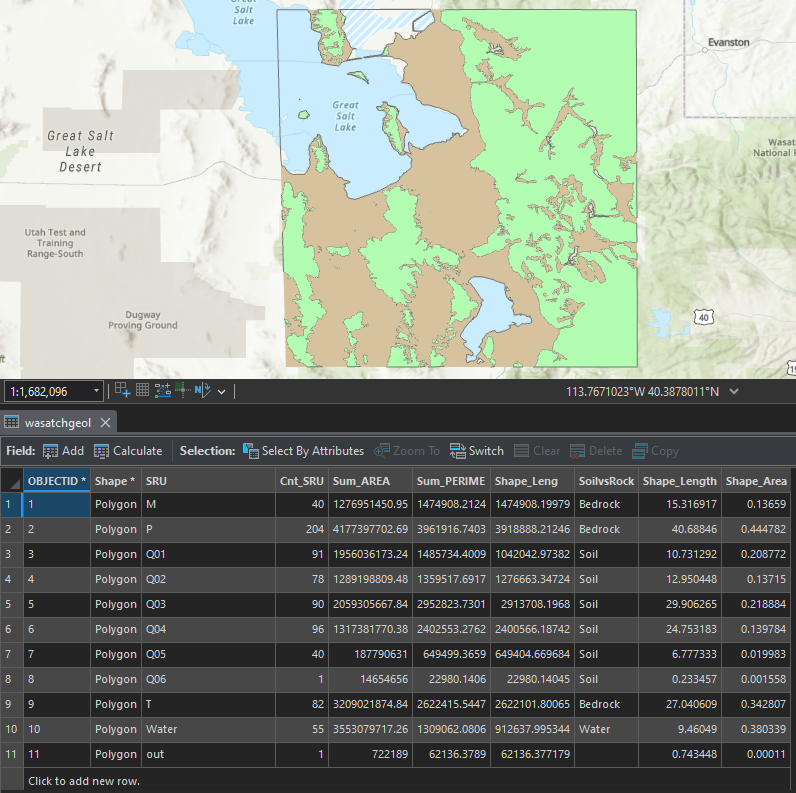